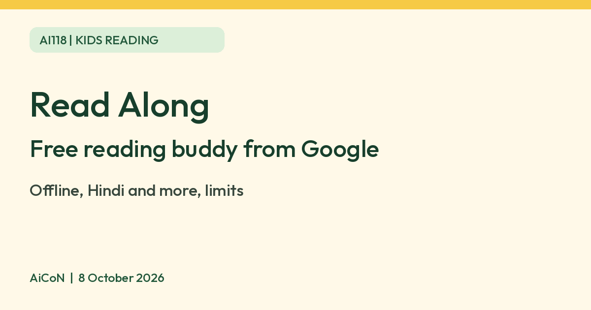

Read Along by Google: a free reading buddy for kids
Read Along is a free Google reading app for children. An in-app reading buddy listens as a child reads aloud and gives real-time help. Google says it works offline after download and lists Hindi, Tamil, Telugu, Marathi, Bangla, Gujarati and Urdu among its languages.

What it is
Read Along is a reading app from Google for children. Google's help page says an in-app reading buddy named Diya uses Google's text-to-speech and voice recognition to listen as a child reads aloud and to respond with real-time feedback and encouragement. Google's Play listing describes it as free and says it works best for children who already know a little of the alphabet.
What children can do
- Read illustrated stories aloud and get instant help when they struggle, with stars and badges as rewards.
- Tap a word to hear it pronounced, per the Play listing.
- Play games that help with reading and spelling.
- Each learner can have a profile and get stories based on reading level, per the Play listing.
- Teachers can use reading groups to track students' progress, per Google's help page.
Languages
Google's language help page lists Arabic, Bangla, English, Gujarati, Hindi, Marathi, Portuguese, Spanish, Tamil, Telugu and Urdu. Malayalam is not on that list. Google's own pages disagree on the count (the Play listing says nine languages, the help page says 11), so check the language list inside the app. You change language in the app under Menu, then Language settings.
Offline and cost
- Google says that after the first download the app works without Wi-Fi and without cellular data.
- The Play listing says it is free with no ads or upsells. Check the Play page on your phone before you install, since store terms can change.
Limits to know
- It is meant for early readers. It does not replace reading with a parent or teacher.
- Voice recognition can mishear a child, especially with accents or background noise. We did not test accuracy.
- The reading buddy hears your child's voice. We did not verify how voice data is handled. Read Google's privacy policy for Read Along before use.
- Google's help page says students can use it on a computer or Android device. We found no iPhone version on the pages we read.
Frequently asked questions
Is it free?
Google's Play listing says zero cost with no ads or upsells.
Does it work offline?
Google says yes, after the initial download.
Does it support Hindi?
Yes, Hindi is on Google's language list, along with Tamil, Telugu, Marathi, Bangla, Gujarati and Urdu.
Is Malayalam supported?
It is not on Google's language page we read. Check in the app.
What age is it for?
Google does not give an age on the pages we read. Play says it works best for children who know some of the alphabet.
Sources: Read Along Help: Learn about Read Along, Read Along Help: Available languages, Google Play: Read Along by Google. Checked 8 October 2026.